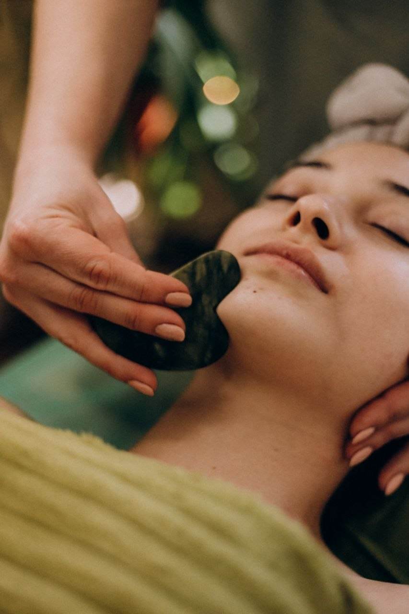
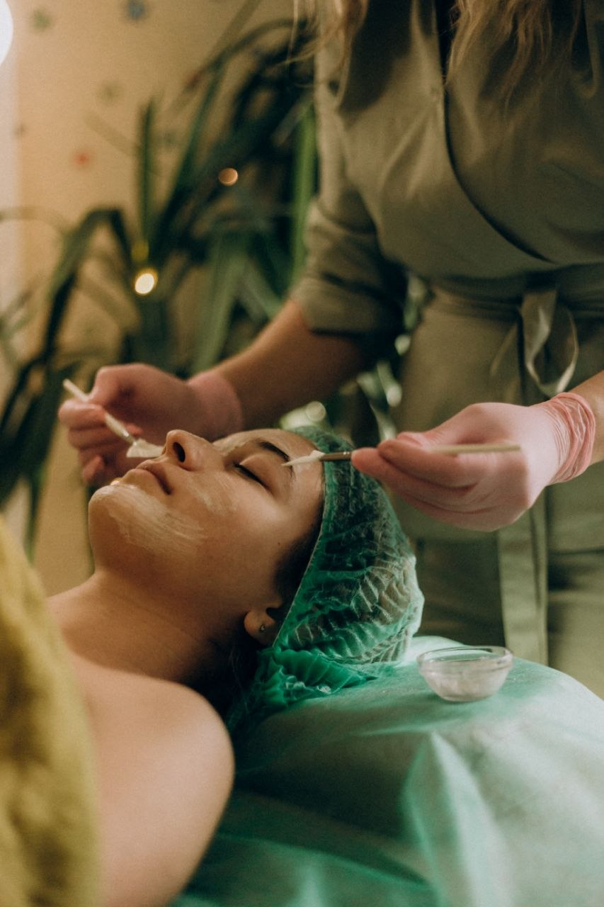
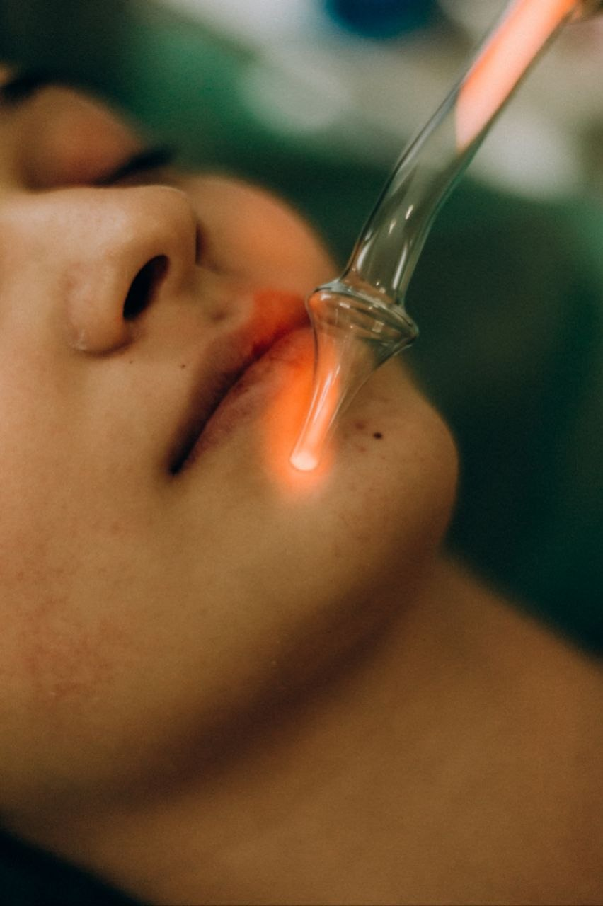
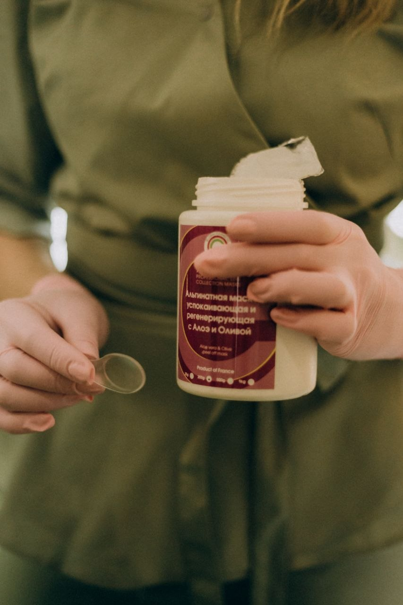
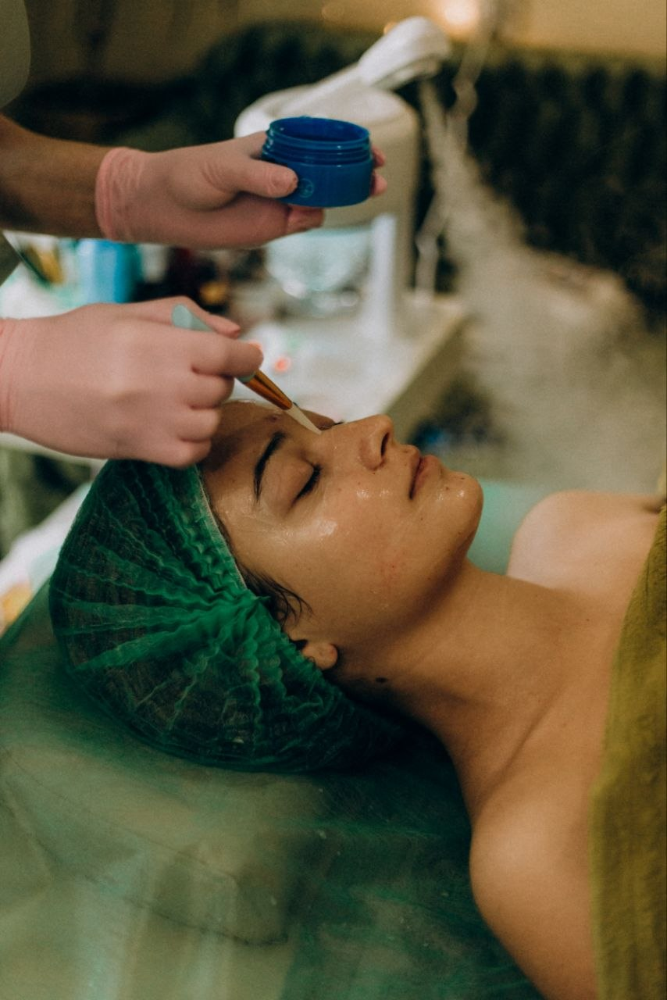

Чи можна зупинити час без радикальних втручань? Моя відповідь ‐ однозначно так. Справжня краса не потребує масок, вона потребує правильного, глибокого та дбайливого догляду.
Я ‐ косметолог‐естетист, і моя мета ‐ допомогти вашій шкірі світитися здоров’ям, зберігаючи вашу унікальну індивідуальність.
У своїй практиці я поєдную три найефективніші напрямки:
✨ Міофасціальний масаж обличчя
Це не просто розслаблення, це справжня «йога» для м’язів та фасцій. Працюючи з глибокими тканями, ми знімаємо спазми, повертаємо м’язам їхню природну довжину, відновлюємо чіткий овал обличчя та зменшуємо набряки. Результат видно вже після першої процедури!


✨ Апаратна косметологія
Сучасні, безпечні та неінвазивні технології, які працюють на клітурному рівні. Вони стимулюють вироблення власного колагену, покращують тонус та миттєво освіжають шкіру без реабілітаційного періоду.

✨ Ексклюзивні доглядові процедури
Індивідуально підібрані ритуали краси: від глибокого очищення та зволоження до інтенсивного живлення. Використовую лише перевірені професійні засоби, що дарують шкірі тонус та сяйво.


💡 Філософія моєї роботи: Краса починається зсередини. Ми працюємо з поставою, розслабленням та природними ресурсами вашого організму для досягнення довготривалого ефекту «Smart Aging».
Приходьте на консультацію, і ми створимо вашу індивідуальну програму молодості та свіжості.
📍 Локація: м. Ізмаїл, Проспект Миру 16, Салон краси "Чарівниця"
📩 Запис у приватні повідомлення або за телефоном: +380979569039
Подаруйте собі час для релаксу та краси, на яку ви заслуговуєте!